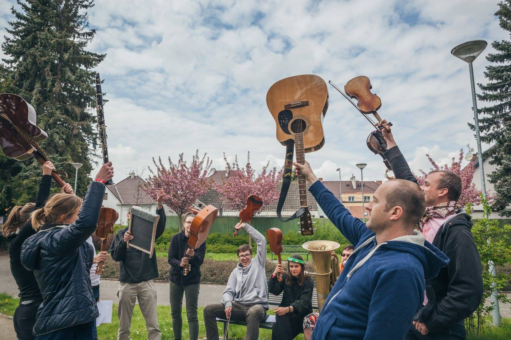
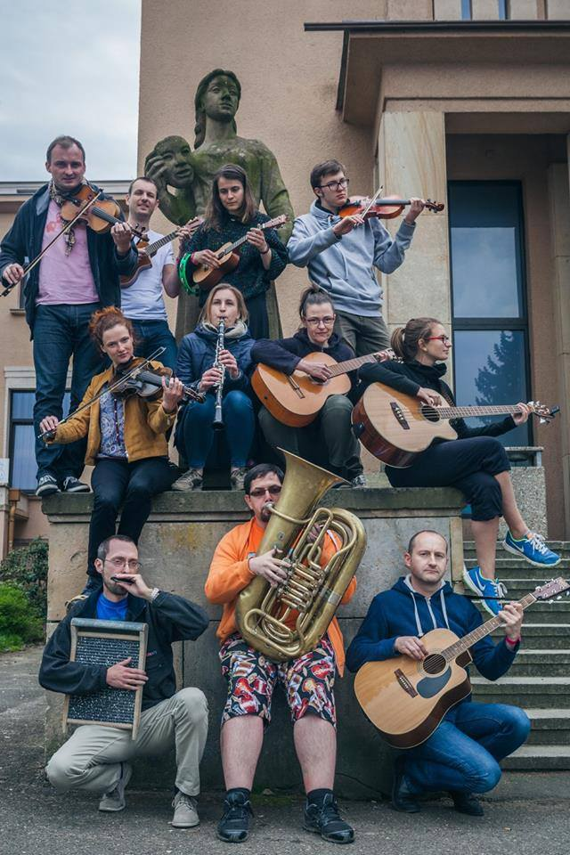

Hudební Improvizace Workshop pro hudebníky všech pokročilostí. Budeme hrát a učit se navzájem hudební postupy a formy. Skupina je organizována podle pravidel divadelní improvizace. Je zde místo pro začátečníky i pokročilé, učíme se dávat si prostor, poslouchat se a přinášet nové prvky do společné tvorby. Stejně tak použiváme různá cvičení a kategorie.
|  |  |
Workshop pro vás pořádá kolektiv hudební improvizace NoTyNe pod vedením Tomáše Randuse. Je to Improligová skupina, která se specializuje na hudební doprovody a divadelní kategorie. Používají metody a principy divadelní improvizace v kombinaci s hrou na nástroje. Ctí princip univerzálnosti hráčů a mají vždy otevřené dveře pro začátečníky. Vše bez předsudků a bez not. Jen co vznikne druhá taková skupina, může je vyzvat na zápas. Zkuste si své improvizační schopnosti ve světě hudby.